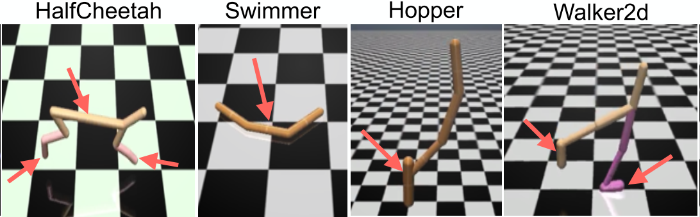

Robust Adversarial Reinforcement Learning
Topics in Machine Learning
Monsoon '17, Course Project
- Binu Jasim T
- Jerin Philip
- Punyaslok Pattnaik
Gaussian MLP Policy
InvertedPendulum: Parameters Illustrated

Additional Agents


Monsoon '17, Course Project